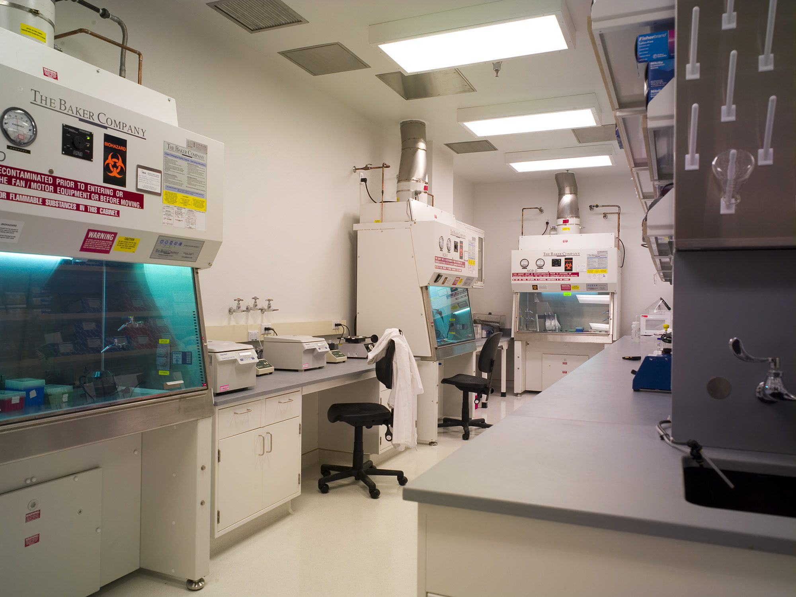
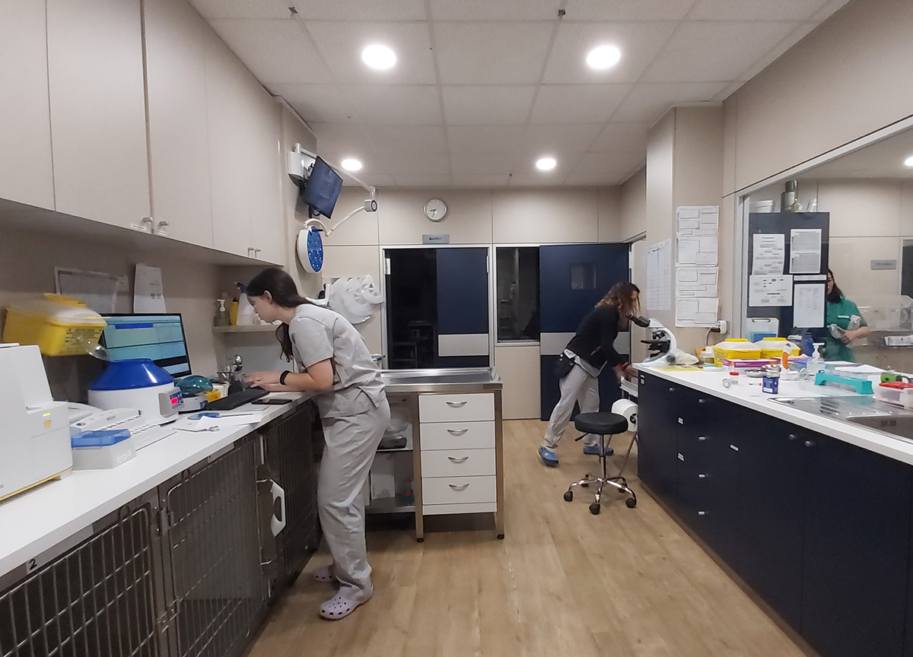

laboratorio
El laboratorio veterinario interno representa un pilar fundamental del servicio, ya que permite realizar análisis clínicos, estudios de sangre, orina, heces y pruebas diagnósticas especializadas de forma rápida y eficiente, sin necesidad de derivaciones externas.Esto no solo agiliza los tiempos de respuesta, sino que también mejora la precisión de los diagnósticos y el control de la evolución de cada paciente. Contar con equipamiento moderno y personal capacitado posibilita la detección temprana de patologías, el monitoreo continuo de tratamientos y la toma de decisiones médicas oportunas. De esta manera, la veterinaria integra tecnología, conocimiento y experiencia para ofrecer una atención confiable, cercana y de alta calidad, enfocada en la salud y el bienestar integral de cada mascota.


🧪 Estudios y análisis de laboratorio
🔬 Análisis clínicos generales
- Hemograma completo
- Bioquímica sanguínea (hepática, renal, metabólica)
- Perfil prequirúrgico
- Perfil geriátrico
- Perfil endocrinológico
🧫 Estudios de orina
- Urianálisis completo
- Sedimento urinario
- Relación proteína/creatinina
- Detección de infecciones urinarias
🧬 Estudios microbiológicos
- Cultivo bacteriano y micológico
- Antibiograma
- Citología de oído, piel y lesiones
- Frotis sanguíneo
🧠 Estudios hormonales y especializados
- Perfil tiroideo
- Cortisol
- Insulina
- Hormonas reproductivas
- Estudios metabólicos específicos
🦠 Dermatología y alergias
- Raspajes cutáneos
- Tricogramas
- Citología dermatológica
- Pruebas para alergias
🐾 Estudios por especie
🐶 Perros
- Diagnóstico de enfermedades infecciosas caninas
- Estudios cardiológicos básicos
- Control sanitario y preventivo
🐱 Gatos
- Diagnóstico de enfermedades felinas específicas
- Estudios renales y urinarios
- Test virales felinos
🐰 Conejos y hámsters
- Análisis parasitológicos específicos
- Estudios digestivos
- Control sanitario de exóticos
🐦 Aves
- Coproparasitológicos aviares
- Frotis cloacal
- Estudios respiratorios
- Detección de enfermedades infecciosas aviares